As I recently returned from a delightful journey attending weddings in Kerala, my wanderlust remained unsatisfied. The festivities reminded me of the importance of connecting with loved ones and exploring new horizons. It was at my cousin's wedding that I had a serendipitous reunion with one of my cousins, with whom I shared an ardent passion for travel. We engaged in heartfelt conversations, delving into my thrilling expedition to the Everest base camp and recounting her own past adventures while exchanging plans for future explorations. Her unwavering support and encouragement to embrace my true self left me with a profound sense of contentment, for it is a rare gift to find understanding souls within one's own family.
Upon returning to Hyderabad, a strong desire to embark on a new adventure arose within me. However, since I had just returned from a two-week trip and couldn't take any more time off, I needed to find a destination that wasn't too far away and could be visited over the weekend.
Ever since I moved to Hyderabad, Mumbai had been on my mind. Coincidentally, a friend's wedding reception was taking place there, and another friend from Pune would also be attending the event. This gave me an extra reason to visit Mumbai. Excitedly, I began planning a weekend trip to the bustling city.
I started my search for transportation options and considered both buses and trains from Hyderabad to Mumbai. Ultimately, considering my limited time and the reception I needed to attend, I decided to take a one-way flight to Mumbai and return by bus. This way, I could maximize my time in the city. I made the necessary bookings, securing a flight for Saturday morning and a bus for Sunday evening. With this arrangement, I had only one full day to explore Mumbai, aside from the time dedicated to the reception.
To ensure I made the most of my limited time, I created a rough itinerary for my one-day exploration in Mumbai. Satisfied with my plans, I set an alarm for 3:30 AM and went to bed.
To the City of Dreams
I woke up to my alarm at 3:30 AM, quickly took a shower, and dressed myself. The previous day, I had made a pre-booking for an Uber to the airport. Shortly after, I received a phone call from the Uber driver inquiring about the fare shown on the Uber app. He requested that I cancel the ride and make a direct payment to him using Gpay. This way, the driver would earn a higher amount from the trip, as Uber deducts a percentage from the fare.
At 4:00 AM, I entered the cab and started my journey toward the airport. I live in Hitech City, and as the traffic was very light in the morning, I reached the airport in 30 minutes. Carrying only a small backpack, the check-in process was swiftly completed within a few minutes. Following check-in, I found myself waiting for an extended period before boarding the flight. Eventually, around 06:30 AM, I embarked on the flight. The aircraft took off at approximately 07:00 AM and arrived in Mumbai by 08:15 AM.
Upon leaving the airport, my attention was drawn to signboards guiding me to the designated cab pickup point. Following the directions provided, I arrived at the Uber pickup point and proceeded to book a cab to Vile Parle train station. The waiting time turned out to be longer than anticipated, and after patiently waiting for around 15-20 minutes, I finally secured a cab. As it was my first time in the city, I peered out of the car window with the curiosity of a young child, absorbing the sights of Mumbai. The sun was shining brightly, and the morning temperature was pleasantly mild. I observed numerous aged buildings that were still inhabited, and when I caught sight of the slums situated near the drainage, along with the individuals residing in those areas, I couldn't help but feel an overwhelming sense of gratitude for everything I have in life. At first glance, Mumbai revealed itself to be a city of stark contrasts—a place where the poorest of the poor coexist with the wealthiest of the wealthy. It is a city that houses Dharavi, one of the world's largest slums, and Antilia, one of the most opulent private residences globally. I could now comprehend why Mumbai is renowned as the city of dreams.
Iconic Movie Locations
Enjoying the initial glimpses of Mumbai, I reached Vile Parle station in just 15 minutes. I purchased a ticket to Churchgate, paying only 10 INR. It was incredibly cheap compared to Uber, which would have cost around 500 INR. Now I understand why Mumbai locals are so crowded and the favored mode of transportation for daily commuters. Despite having seen Mumbai locals in countless Bollywood movies, I had never actually been on one myself. The anticipation of experiencing a local commute in Mumbai filled me with excitement. The station had multiple platforms, and I was uncertain which one to proceed to. Seeking assistance, I approached a teenager who kindly directed me to the platform where I could catch the train. Unfortunately, by the time I reached the platform, the train had already departed. However, within 5 minutes, the next train arrived, allowing me to successfully board it.
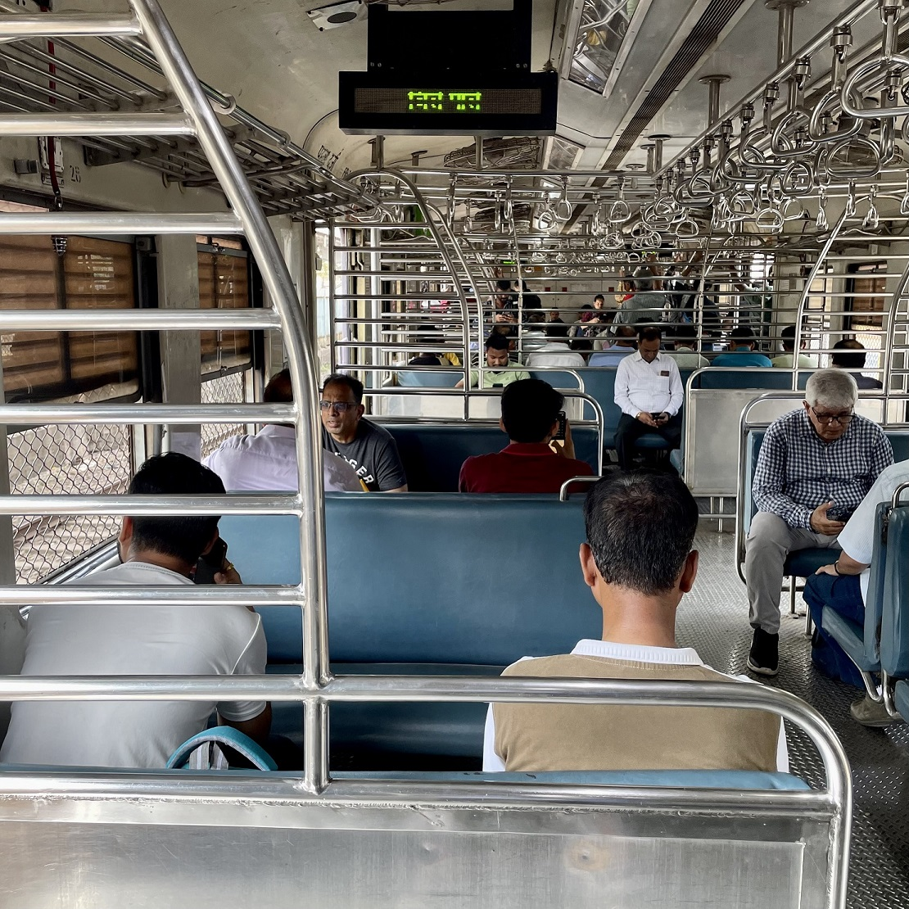 First class compartment on a Mumbai local trainTo my surprise, the coach I boarded was not crowded, and there were vacant seats available. Since it was my first time, I didn't feel like taking a seat. I wanted to embrace the moments, so I stood like a local and relished the scenic views. Unable to resist the temptation, I captured a video for my Instagram story and promptly shared it. I was still curious about the sparsely occupied coach until it dawned on me that it was a Saturday. After a while, I noticed the "First Class" sign displayed inside the compartment. Initially, I had assumed that passengers could enter any compartment without distinction. However, when I later conversed with a friend residing in Mumbai, I discovered that the fare for a first-class ticket is slightly higher. Fortunately, there were no ticket inspections during my journey.
While I was aboard the train, I received a call from my friend who was also traveling to Mumbai from Pune by train. He informed me that he had arrived at Mumbai Central railway station and inquired about our meeting point. I directed him to meet me at Nariman Point, which was the first stop on our itinerary. After alighting at Churchgate station, I opted to book an Uber Taxi instead of an Uber Go, and to my delight, it turned out to be one of the iconic Black & Yellow taxis. It was cheaper than the Uber Go option, but the interiors were not as clean and tidy. Nevertheless, it was still worth it. Just like the Mumbai local train, traveling in Mumbai's iconic Black & Yellow taxi is an experience one should never miss while in Mumbai.
I entered the cab, and before long, we were driving along Marine Drive. Beholding Mumbai's skyline across the beach was a visual delight. It was in that very moment that I developed an affection for the city of Mumbai, a captivating coastal metropolis. The surroundings appeared clean and well-tended. Despite the hot and humid weather, the gentle breeze provided respite. As I journeyed along Marine Drive, I took a video capturing the experience and reached Nariman Point in around 5-10 minutes.
I waited for my friend near the Oberoi Hotel, located just across from Nariman Point. I had heard that these areas become quite crowded on weekends, but at that moment, they were surprisingly peaceful. I noticed a few tourists capturing selfies, but overall, the ambiance was serene and tranquil.
After 5-10 minutes, my friend arrived, and we started walking towards Nariman Point. As I stood there, the melodious tune of "Iktara" from the movie "Wake Up Sid" started playing in my ears. The sun shone brightly, prompting us to take a few pictures before seeking refuge under the shade of the trees. I shared one of my pictures as an Instagram story with the same song - "Iktara." After strolling along the promenade and relishing the breathtaking views of Marine Drive for a while, we decided to proceed to our next destination.
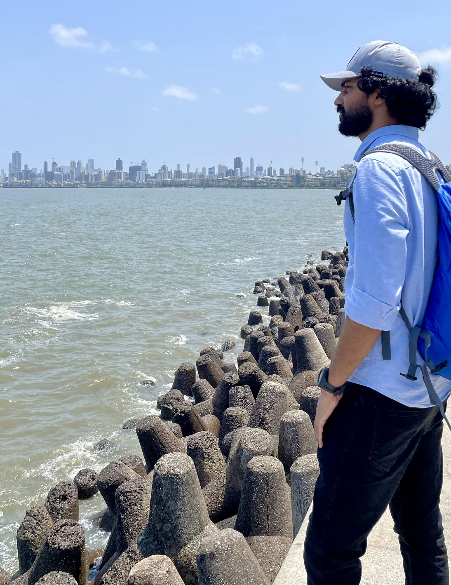 Near Nariman PointWe hailed an Uber to Dalal Street, a mere 10 minutes away from Nariman Point. From there, we walked towards the Bombay Stock Exchange. And there it stood, the iconic BSE building. Although closed to the public, we simply wanted to catch a glimpse of it from the outside. It wasn't necessarily a prominent tourist attraction, but the experience of laying eyes on a place we had only encountered through media throughout our lives held a special significance.
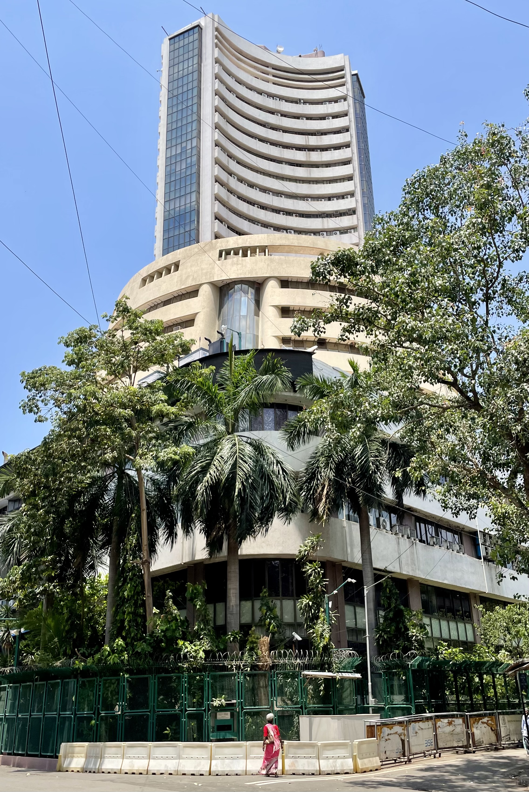 Bombay Stock ExchangeFrom there, we started walking towards our next destination, the Gateway of India, which was just 1 km away. We strolled through the streets of Colaba and reached the Gateway of India in approximately 10-15 minutes. Unlike Marine Drive in the morning, this place was bustling with a crowd. The Gateway of India was surrounded by barriers, with designated entry and exit points.
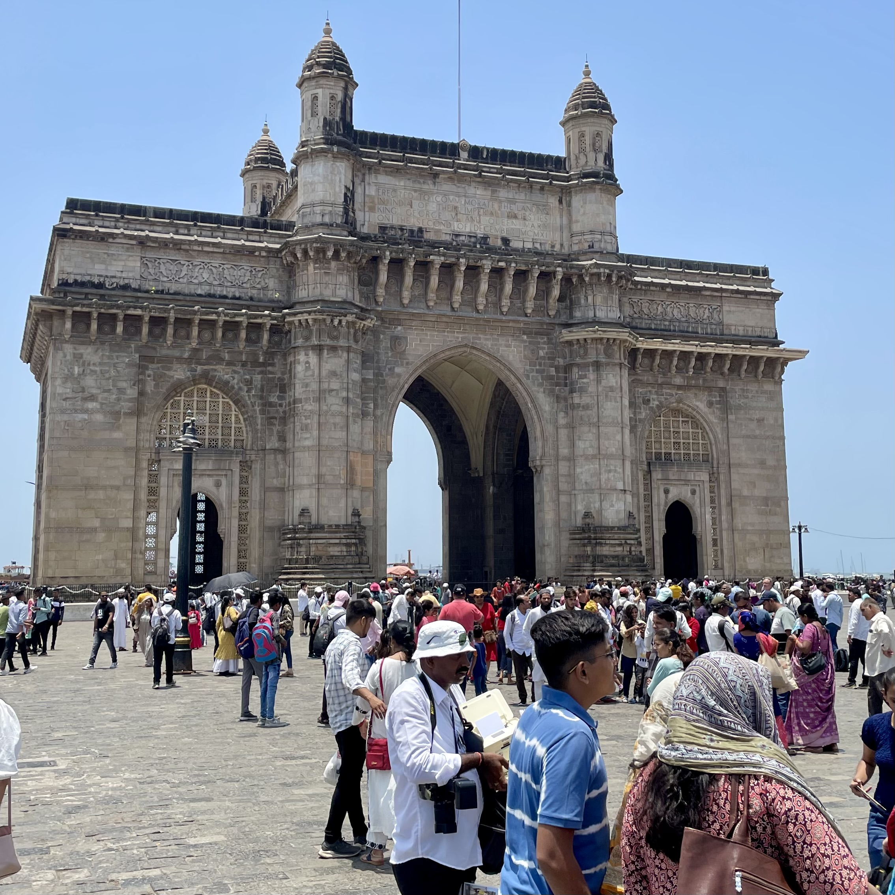 Gateway of IndiaAs we entered, a few individuals approached us, selling boat tickets for the Elephanta Caves tour, departing from the Gateway of India. However, I opted not to go on the tour as it could easily consume 3-4 hours for the round trip, and I wanted to explore other popular attractions within that timeframe. So, I passed on the offer. The weather was sunny and humid, causing us to perspire, but the sight of the Gateway of India made it all worthwhile. Just opposite the Gateway of India stood the infamous Taj Mahal Palace hotel.
2008 Mumbai Attacks
In November 2008, the Taj Mahal Palace Hotel encountered a heart-wrenching event as it became the target of a devastating terrorist attack. Yet, like a phoenix rising from the ashes, this iconic establishment stood tall, embodying the spirit of resilience and fortitude. After undergoing meticulous renovations to reclaim its former splendor, the Taj Mahal Palace Hotel emerged triumphantly, once again opening its majestic doors to the world.
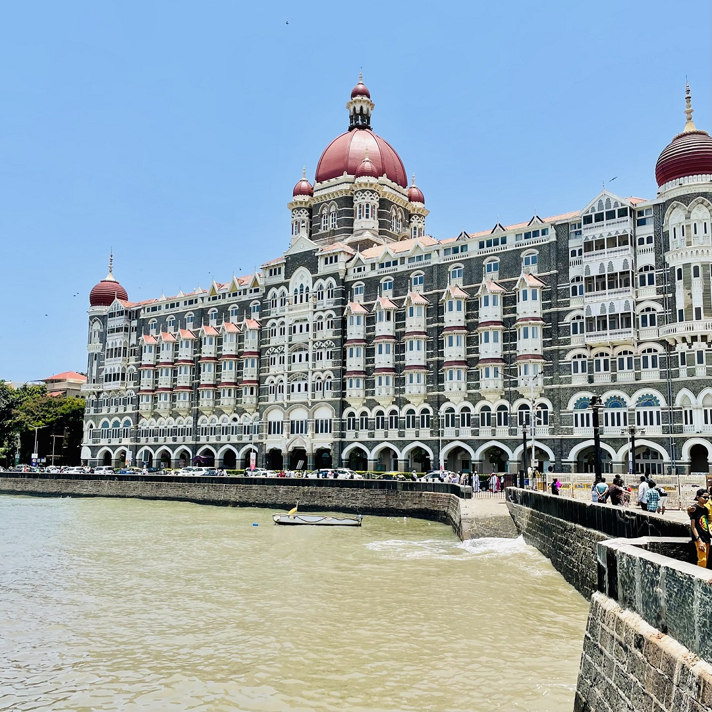 The Taj Mahal Palace HotelWe sat near the Gateway of India, gazing at the Taj Mahal Palace hotel and marveling at its exquisite beauty. Due to the intense sunshine and lack of shaded areas, we opted to stroll towards the Taj Mahal Palace hotel. As it was brunch time, our next destination was the renowned Leopold Cafe, a popular café in Colaba that had also suffered from the tragic events of 2008.
Leopold Cafe is an iconic restaurant in Mumbai, established in 1871. It has a vibrant ambiance, serving a mix of Indian, Continental, and Chinese cuisine. The cafe's historic significance and mention in the novel "Shantaram" have made it a popular tourist spot. Despite being targeted during the 2008 Mumbai terrorist attacks, it reopened, symbolizing resilience. The interior is adorned with vintage decor, attracting a diverse clientele. Known for its delicious food and old-world charm, Leopold Cafe offers visitors a taste of Mumbai's culture and a glimpse into its rich history.
The Cafe was not far from the Taj Mahal Palace hotel, so we opted to walk. The streets of Colaba were perfect for a leisurely stroll, although the humid weather caused us to perspire. We noticed numerous street shops lining the way, with young and beautiful girls engrossed in their street shopping activities. After approximately 5 minutes of walking, we arrived at the cafe and prepared to indulge in its offerings.
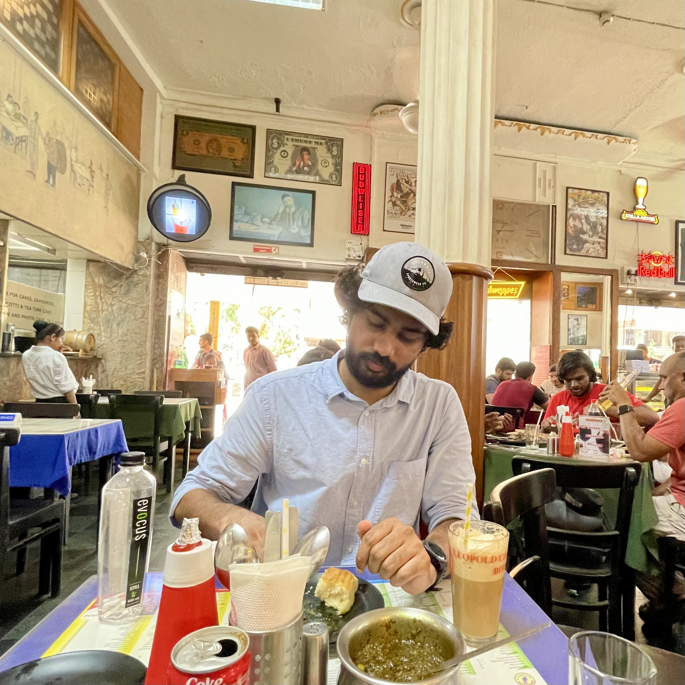 Leopold CafeThe Cafe exuded a warm and bustling ambiance. Fortunately, we secured a table and perused the menu. However, we decided to seek the waiter's recommendations. One of the waiters suggested trying the Mutton Keema Pav. Intrigued, we ordered two servings and, as anticipated, they were delightfully delicious. I had heard that the cafe still bore bullet marks from the 2008 attacks. After finishing our meal, I made my way to see the bullet marks and took a few photos of them.
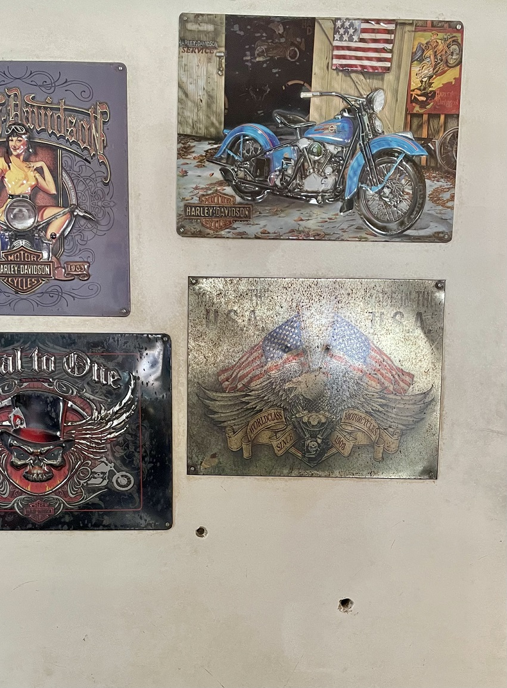 Bullet marks from the 2008 attacksArchitectural Marvels of Mumbai
From there, we booked an Uber and headed towards our next destination, which was CST. I had a desire to witness CST in all its illuminated splendor at night. However, since I needed to attend the reception at 07:00 PM, it wouldn't be feasible to return to this location during the evening. Therefore, I made the decision to visit CST during the daytime, at the very least. Upon arriving at the site, I crossed the road to reach the Selfie point and admire CST from there. Numerous individuals were present, eager to capture selfies with CST as their backdrop. While I wasn't particularly interested in taking selfies, I did capture a few photographs to commemorate the moment.
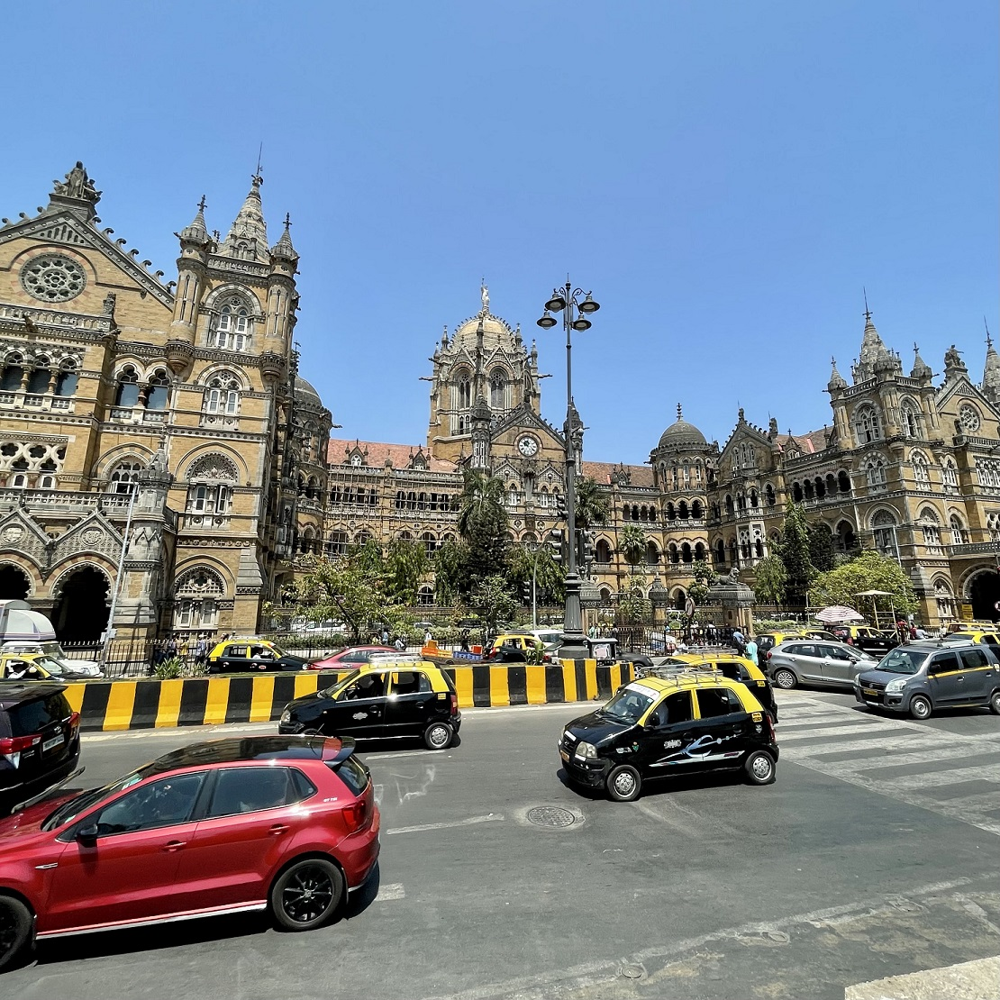 Chhatrapati Shivaji TerminusNext on our itinerary was Antilia, an opulent private residence in Mumbai, owned by Mukesh Ambani. It stands as one of the world's most expensive properties. The building soars to a height of 27 stories, equivalent to that of a 60-story structure. Encompassing over 400,000 square feet, Antilia boasts extravagant amenities such as multiple pools, a ballroom, a temple, a movie theater, and more. The architectural design seamlessly blends modern and traditional elements, featuring intricate glasswork and vertical gardens. Located on Altamount Road, one of South Mumbai's most affluent neighborhoods, Antilia provides breathtaking panoramic views of the Arabian Sea.
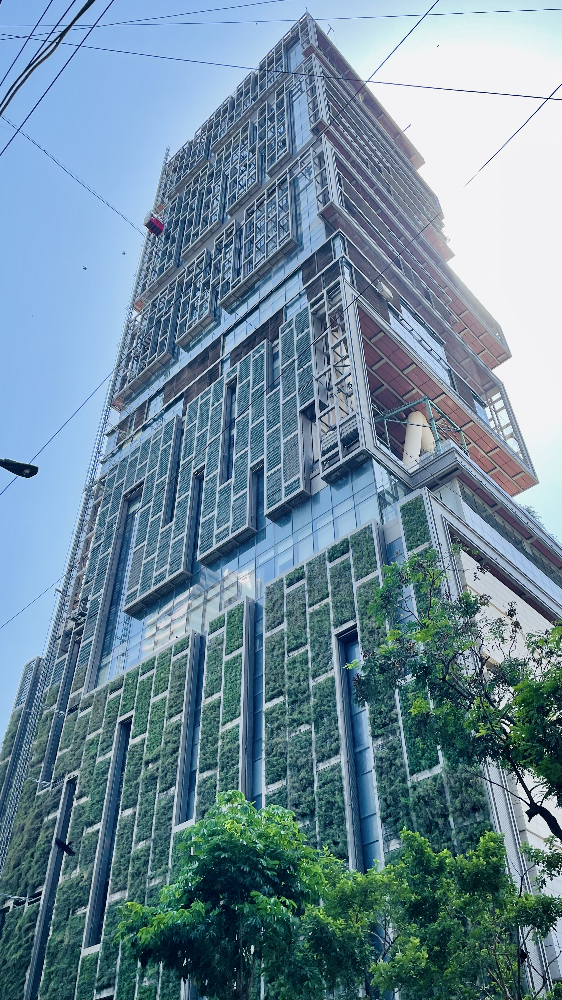 AntiliaWe booked an Uber to reach Antilia, which took approximately 15-20 minutes from CST. Upon arrival, I immediately noticed the heightened level of security in place. Earlier, the Supreme Court had ordered Z+ security for Mukesh Ambani and his family members. The Uber dropped us off right in front of Antilia. Stepping out of the car, I gazed at the magnificent building, craning my neck to take in its entirety. Its towering height required me to step back a few meters to truly appreciate its grandeur. In fact, I had to walk even further to capture a good photograph. As I marveled at the sight, I couldn't help but wonder about the extravagant interiors of this private residence. It made me reflect on how people, living under the same sky, can lead vastly different lives. It was a lifestyle that we could only imagine.
After spending 5-10 minutes and capturing a few photographs, we arranged an Uber ride to Haji Ali Dargah. Although it was merely 5 minutes away from Antilia, our driver seemed to be circling around due to road closures along the usual route, as far as I could surmise. Eventually, he dropped us off at a location and informed us that we would need to continue on foot from there. We got out of the car and began walking in that direction, but our progress was halted by construction workers who informed us that reaching the Dargah from that point was not possible. They advised us to travel approximately another kilometer along the road to find the entrance to the Dargah. Feeling perplexed, we sought confirmation from a taxi driver nearby. Then we hired the taxi to cover the additional kilometer. Upon arrival, my friend recognized the place as the correct location since he had been there before, and this was the entrance he had used.
We began our walk towards Haji Ali Dargah. Despite the crowd, my friend mentioned that it was relatively less crowded compared to his previous visit. To reach the Dargah, one must access the causeway that leads to it. However, during high tide, the causeway becomes submerged, rendering it inaccessible. Thankfully, when we visited, it was low tide. The view from the coast was truly breathtaking, with a shrine situated on a small islet in the Arabian Sea, approximately 500 meters away from the shore.
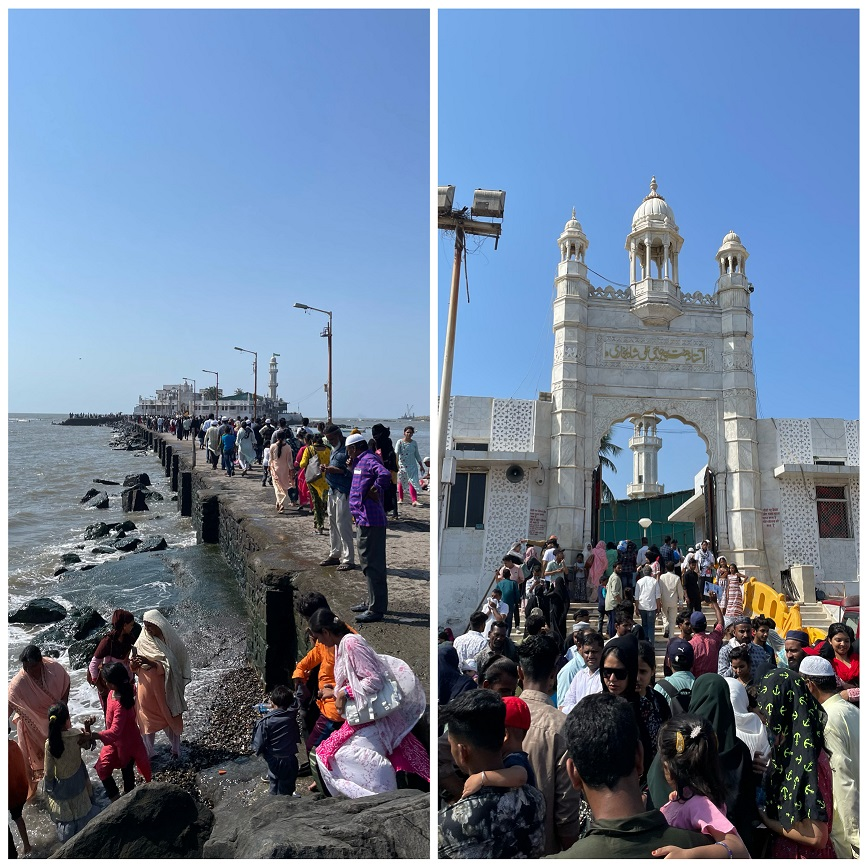 Haji Ali DargahDue to the low tide, the water level near the causeway was significantly reduced, allowing some families to enjoy dipping their feet in the water. We proceeded slowly along the causeway, amidst the crowd. The weather was sunny, humid, and hot, causing us to perspire profusely. Given the discomfort, I preferred not to linger for long. Consequently, I hastened my pace, entered the shrine, paid my respects at the tomb of Haji Ali Shah Bukhari, and promptly made my way back to the coast. Despite the intense heat and humidity, the experience of visiting such a unique place was undeniably worthwhile. Witnessing a shrine surrounded by the expanse of the Arabian Sea is truly a rare and remarkable sight.
 Tomb of Haji Ali Shah Bukhari
Tomb of Haji Ali Shah Bukhari
As I made my way back, thoughts of indulging in a delicious milkshake from the renowned Haji Ali Juice Centre occupied my mind. Though I had never visited before, I had heard numerous praises about it. It seemed like the ideal remedy to combat the scorching summer heat and the sweat from the walk. Conveniently situated near the exit, close to the main road, the juice center had a limited seating capacity but a bustling crowd outside. Fortunately, we managed to secure a table indoors and sought their recommendations. Upon their suggestion, we ordered their specialty: the dry fruit milkshake. Relaxing there for a while and relishing the delightful milkshake provided much-needed relief.
The next destination on our list was Bandra Fort, and we planned to travel via the iconic Bandra-Worli Sea Link. From the Haji Ali Juice Centre, we proceeded to book an Uber for our journey to Bandra Fort, which was approximately 11 km away. However, despite waiting patiently, the cab seemed to remain distant. I monitored the cab's progress through the app and realized that it was seemingly circling around. Similar to our previous experience, it appeared that the driver was struggling to find a suitable route due to various road closures. Frustrated, I canceled the ride and attempted to book another cab in hopes of better luck. Unfortunately, we encountered the same issue once again. During the wait, we inquired with nearby taxi drivers who quoted significantly higher fares. While Uber estimated the fare to be around 300 INR, the taxi drivers were demanding 500 INR. When we inquired about the difference in fares, one of the drivers explained that there is a toll on the Worli Sea Link, which might not be included in the Uber fare, and we could potentially have to pay an additional charge upon completing the ride. I confidently asserted that the Uber fare encompasses all charges, and there is no need for any extra payment. However, the driver was unwilling to negotiate. Eventually, after waiting for approximately 20-30 minutes, we abandoned the Uber option and reluctantly decided to take the taxi instead.
The Worli Sea Link, a 5.6-kilometer-long bridge connecting the neighborhoods of Bandra and Worli, stood before us. As we traversed the bridge, I began recording a video to capture the remarkable journey along the Worli Sea Link. The bridge provided breathtaking views of the sea and the iconic Mumbai Skyline.
Bandra and the King of Bollywood
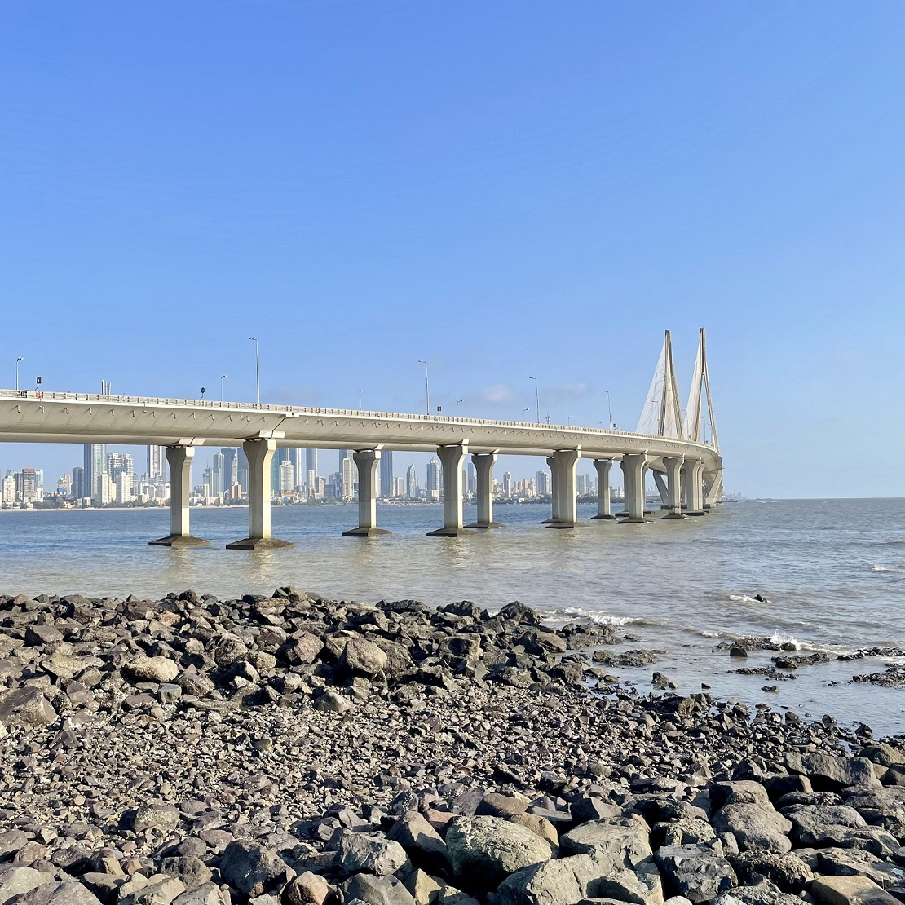 View of Worli Sea Link from Bandra FortAfter approximately 20 minutes of travel, we arrived at Bandra Fort. Upon entering the fort, my attention was immediately drawn to the sight of the Worli Sea Link. The panoramic view of the bridge from Bandra Fort was truly magnificent, with the backdrop showcasing the Mumbai skyline. While relishing the scenery, my eyes were captivated by a street dancer, skillfully performing to music emanating from his portable Bluetooth speakers. Amidst the bustling crowd, he danced as if no one was watching, wholly immersed in his captivating performance. Numerous youngsters eagerly captured his artistry, ready to share it on their Instagram accounts.
Our next two destinations were within close proximity, just 250 meters away. We began our walk towards Mannat, the private residence of the King of Bollywood, Shahrukh Khan. As we neared Mannat, we noticed a crowd of fans eagerly taking selfies in front of the grand residence. I had heard that Shahrukh occasionally waves to his fans from there, but it seemed that today was not our fortunate day. After capturing a few pictures, we proceeded towards Band Stand, our subsequent destination, conveniently located just opposite Mannat.
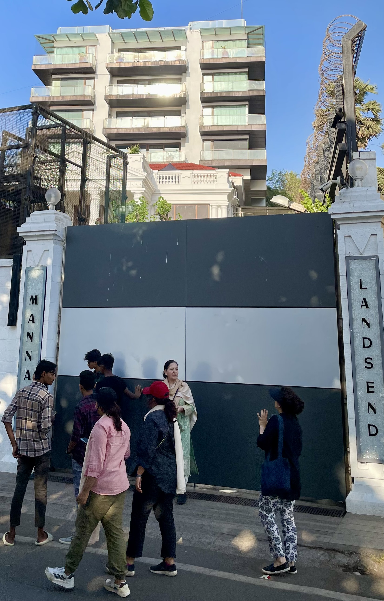 MannatBandstand is renowned for its vibrant ambiance and serves as a popular destination for individuals seeking leisurely walks, jogging, and enjoying the mesmerizing sunset. The promenade is adorned with benches and well-paved pathways, providing an ideal setting for relaxation and rejuvenation in the midst of the refreshing sea breeze. Apart from its scenic allure and cultural significance, Bandstand is also notable for housing the residences of numerous Bollywood actors, musicians, and other prominent figures. The upscale residential complexes along the promenade attract attention, turning Bandstand into a renowned spot for celebrity sightings. As a result, tourists often flock to this area with hopes of catching a glimpse of their beloved stars.
 Band Stand
Band Stand
After savoring the beautiful sunset at Bandstand, we hailed an auto-rickshaw to reach Bandra station, which was approximately a 15-minute journey. At the station, we purchased two tickets to Vile Parle, as our hotel was conveniently situated near Vile Parle station. Upon arriving at Vile Parle station, we opted for another auto-rickshaw to transport us to the hotel. Following the check-in process, we refreshed ourselves with a shower and dressed up for the wedding reception. Taking another auto-rickshaw, we arrived at the venue and enjoyed a wonderful time celebrating our friend's wedding. The reception concluded around 10:30 PM.
Before leaving for the hotel, I inquired if my friend was interested in visiting Marine Drive and spending some time there. However, he expressed his exhaustion and desire to return to the hotel for some much-needed rest. Although I yearned to experience Marine Drive at night, I felt it would be unfair to leave him alone. Furthermore, I appreciated his patience throughout the day, despite being tired. Hence, we decided to book an Uber and head back to the hotel together.
Upon arriving in the hotel room, I asked about our plans for the following day. I had only planned for one day, but I had a few additional places in mind to visit if time allowed. He replied that I could decide, and he was open to anything. However, when I proposed the idea of going for a jog at Juhu Beach at sunrise, he gave me a glance that seemed to convey, "Let me enjoy some quality sleep." Having visited numerous places in less than a day and feeling content with my experiences, I decided it was time to prioritize getting some rest before continuing my explorations. With that in mind, I went to sleep without setting an alarm, which was out of character for me.
Lazy Sunday
When I'm on a trip, I typically don't sleep much. I rise early, around 6-7 AM, to savor the beauty of the mornings, regardless of the destination. However, that day was a lazy Sunday morning for me. I naturally woke up after a satisfying amount of sleep, which was around 9:00 AM. After spending some time scrolling through my phone, I took a refreshing shower, dressed up, and packed my belongings in preparation for checking out of the hotel. It was approximately 11:30 AM when we completed the check-out process. Feeling famished, we decided to have breakfast at Prithvi Cafe, located near Juhu Beach. Renowned as one of the most popular cafes in Mumbai, it was an ideal choice to satiate our hunger.
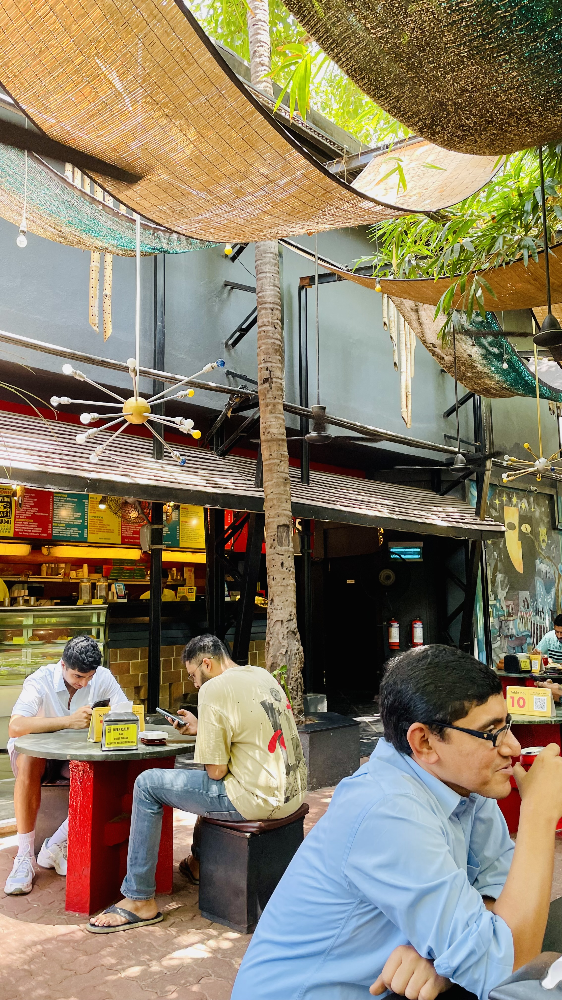 Prithvi CafeWe hailed an auto-rickshaw to Prithvi Cafe. It was a serene and cozy open cafe, exuding an artistic ambiance, making it an ideal spot for a leisurely Sunday breakfast. I decided to order a cheese croissant, a cheese sandwich, and their renowned Irish coffee. Meanwhile, my friend opted for pav bhaji and filter coffee. Although it took approximately 30 minutes for our order to arrive, I found myself immersed in the delightful atmosphere of the cafe. After relishing our breakfast, we embarked on a leisurely walk towards Juhu Beach, which was just 500 meters away. As it was already noon and the sun was scorching, we decided not to spend an extended period of time on the beach. Instead, we took a brisk stroll along the shoreline. I noticed numerous couples walking on the beach, seemingly having spent quite some time there. I marveled at their ability to enjoy the beach during the hot and humid weather. Love knows no boundaries, indeed.
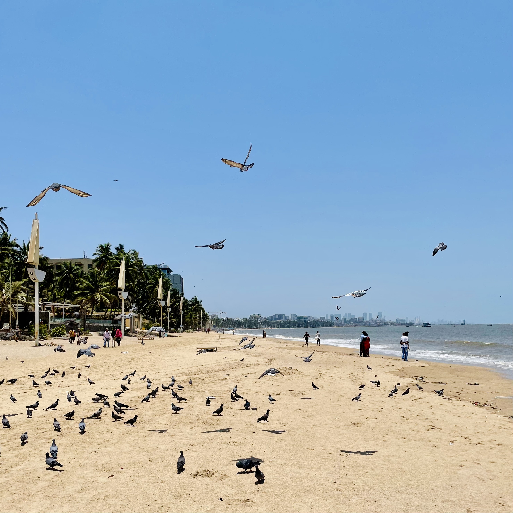 Juhu BeachNext, we visited Kalki, one of the most popular designer boutiques in Mumbai, located on Santa Cruz Street. Being in Mumbai, I decided to take a quick look at the Sherwani collections at the Kalki store for my wedding. While the majority of their collection was for women, they did have a small selection for men as well. All the items there were extremely expensive, so I decided to only browse their collection in the lower price range. While trying on Sherwanis, I noticed a beautiful woman, resembling a Bollywood actress, trying on her wedding dress. It reminded me of a scene from the movie "Yeh Jawaani Hai Deewani," where Aditya Roy Kapoor says, "Kitni sundar dulhan hai yaar, bhaga ke le jau." I shared this with my friend, and we had a good laugh. After trying a few Sherwanis and sharing pictures with my sister, we finally selected one Sherwani for my wedding. I paid the bill and patiently waited for around 30 minutes to have it packed and ready. As I received the Sherwani, I realized that I would have to carry it with just one fold all the way to Hyderabad.
Bandra Kurla Complex
Next, we decided to visit the Apple BKC, one of the two official stores in India. It is located in Jio World Drive, in the Bandra Kurla Complex (BKC), which is a bustling business district in Mumbai. Renowned for its contemporary infrastructure and well-planned architecture, BKC is home to numerous corporate offices, financial institutions, and government establishments. It boasts excellent connectivity, with convenient access to the Western Express Highway and the Bandra-Worli Sea Link.
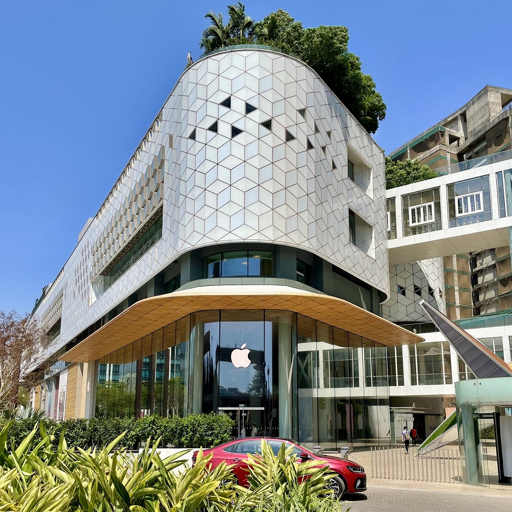 Apple BKCAs expected, the Apple store showcased impeccable modern architecture. It displayed all the Apple devices in various variants, and the store itself was quite spacious. After taking a quick tour of the store, we decided to explore the rest of Jio World Drive Mall. The mall featured a multitude of luxury brand stores, which made us hesitate to enter any. Instead, we took a brief walk around the mall and decided to have lunch there before parting ways.
We ordered two falafel wraps from one of the restaurants in the food court. While enjoying our meal, my friend started looking for transportation options to the train station. As we were quite far from the station, he grew concerned about potentially missing the train. After finishing our meal, he rushed to the train station. Meanwhile, I remained at the mall, leisurely spending some more time there. After a while, I booked an Uber to my boarding point.
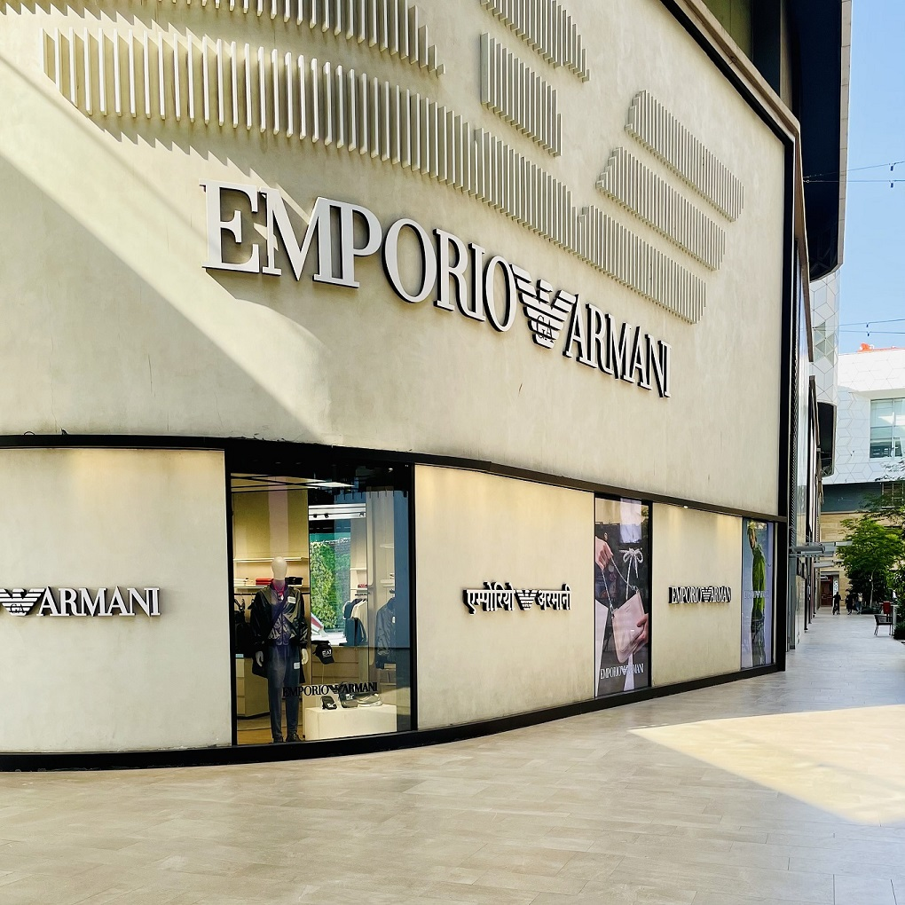 Emporio Armani Store at Jio World DriveI arrived a few minutes before the reporting time, but unfortunately, the bus ended up arriving around 30 minutes later than scheduled. I boarded the bus, stored my belongings, and settled into my seat. It was going to be a long journey back to Hyderabad, but I had plenty of good memories to reflect upon during the ride.